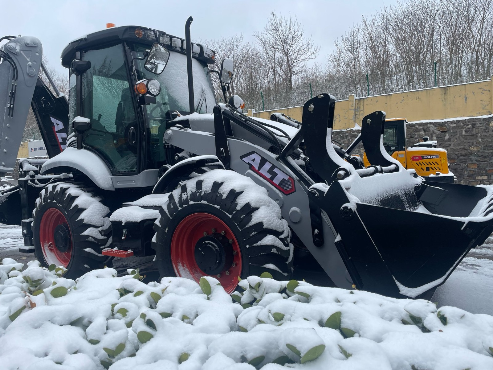
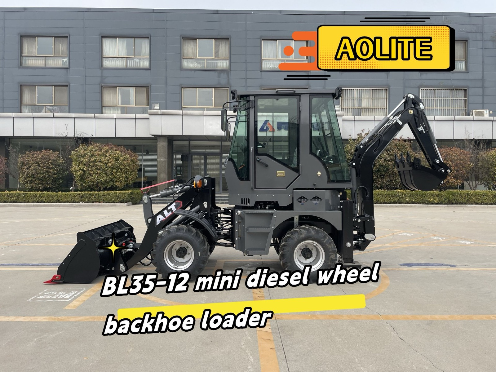

A machine in the weather it was actually ordered for. Almost every refusal in this article came down to the same thing: not the price on the quotation, but whether the machine and the conditions on the ground agree with each other. Real yards look like this. Catalogues do not.
First, What Saying No Actually Costs — Because It Is Not Charity
Let me take the halo off this topic before it puts one on me. When I decline an order, my company loses revenue, I lose a customer conversation I may have spent weeks on, and the competitor who accepts that order gets paid. Refusing business is not a virtue; it is a cost we accept because the alternative costs more later. A machine sold into conditions it cannot survive does not end the relationship at the port — it starts a two-year conversation about breakdowns, and neither side enjoys it.
So I am not writing this to tell you that I am careful and other people are not. I am writing it because the pattern behind these refusals is useful to you as a buyer, in a way that a catalogue never is. Each of the five situations below is real in the sense that I have lived versions of it — though I have blurred the details, because the point is the pattern, not the customer. And in each one, the interesting part is not the refusal. It is the question that made the refusal obvious, because that is a question you can ask yourself before any supplier has to ask it for you.
One more thing before the list. A "no" from a factory is almost never "no, forever". In most of these cases, I ended up sending the same customer a different machine, a different configuration, or the same machine on a different schedule. If you read the five situations and find one that resembles your own project, the last section is about how those orders got rescued — because they usually can be.
Number One — The Budget That Buys the Machine but Not Its Life
The first kind of no is the hardest, and it usually looks like this: a buyer with a fixed budget that covers the machine, the freight, and nothing else. No first service stock, no filters, no tyres for the first year, no contingency for the first repair. On paper the deal works. In the field it does not, because a machine is not a purchase, it is an operating cost that starts the day it lands.
The question that gives it away is one I ask every serious buyer: "What does your second year of owning this machine look like?" Not the purchase year — the second year, when the filters need changing, the first hydraulic hose has aged, and something small has broken. If the honest answer is that there is no money for that year, then the choice is not between this machine and a cheaper one. It is between a machine that runs and a machine that sits.
What I would rather do than say no: cut the specification honestly. A smaller model that fits the budget with room left for parts, a standard configuration instead of an elaborate one, one attachment now and the second one after the machine has earned it. I wrote about the mathematics of the parts budget separately — the article on what spare parts really cost over a machine's life is the one I send to buyers at this stage, because the number at the bottom of a proforma invoice is not the number that matters.

A BL35-12 mini diesel wheel backhoe loader outside the plant. When a budget is tight, this is the conversation I would rather have than a discount on a machine the buyer cannot afford to keep running — a smaller, matched machine, with money left over for filters, wear parts and the first repair.
What I will not do is shave the machine until the budget fits. A thinner frame, a lower-grade hydraulic component, a cheaper tyre — those savings are exactly where the second year's costs come from. If the only way to make an order work is to quietly make the machine worse, the honest answer is a smaller order, not a worse machine.
Number Two — The Right Machine for the Wrong Ground
The second refusal is about matching, and I have to be careful how I describe it, because it is emphatically not about good machines and bad machines. A standard configuration with dry brakes is the right answer for a buyer on clean, hard, firm ground with moderate hours — it is cheaper to buy and simpler to maintain, and choosing it is a decision, not a compromise. The same configuration sent to a quarry, a sand site, or a muddy construction yard is a machine being set up to disappoint someone.
The buyers in this situation are never careless. They are usually working from a specification that made sense somewhere else — a tender document, a colleague's recommendation, a brochure from a different market. The machine on the order is a good machine. The order is a bad match. And a bad match does not show up as drama; it shows up as brake wear nobody can explain, a service bill that climbs every quarter, and a growing feeling that the supplier sold you something wrong.
The question that catches it: "Walk me through the ground the machine will actually work on." Not the country, not the project type — the surface. Dusty? Abrasive? Muddy? Hard and compacted? Any supplier who does not ask you that before quoting a driveline is not selling you a matched machine, they are selling you the machine they have.
When the answer is dust, sand or grit, the matched answer is an enclosed wet-brake axle, where the braking components sit sealed in an oil bath and abrasives cannot reach them. When the hours are moderate and the ground is clean, the standard axle is the matched answer and I say so. I laid out the full logic — engines that follow your country's emission rules, axles that follow your ground, quick couplers that follow how many attachments you will really use — in the guide to matching a backhoe loader configuration, because the goal is that the machine and the order agree with each other.
So the "no" here is really "not this version". I have said no to a standard configuration for a dusty site and then sent the same buyer the same model with wet brakes and a different story two months later. The refusal was the cheapest engineering advice that customer ever got.
Number Three — The Order That Wanted a Logo, Not a Machine
The third kind is delicate, because the legitimate version of it is a service I sell. Let me explain both sides.
Buying machines under your own brand is a normal, respectable business. A dealer building a brand in his own market, who plans to stock parts, train a technician, answer his customers' calls, and stand behind the machine for years — that is exactly the customer a factory wants, and the OEM route exists for him. When I decline one of these orders, it is never because it is branded. It is because of what is missing underneath the branding.
The version I say no to looks like this: the entire conversation is price, paint and decals. There is no interest in which hydraulic components are inside, no questions about warranty handling, no parts plan, no service intent — and usually, a delivery date that suggests the machines are being sold before they are even ordered. What is being purchased is not a machine with a logo on it. It is a logo with a machine somewhere behind it, and the buyer's customers will eventually discover the difference.
Here is why this is worth writing down even though it costs me orders to say it: a supplier who takes that order is not doing the buyer a favour. The machines will exist, they will ship, and then the market will do the inspection that the buyer skipped. The refusal stings for a week. The alternative stings for the length of the warranty.
Number Four — The Configuration the Market Cannot Service
This is the most technical of the five, and the one where a "no" is hardest to hear, because I am usually saying no to a buyer who wants to do everything right. He has the budget, he has read the specifications, and he has chosen the most capable configuration on the list — the premium driveline package, the advanced hydraulic controls, the full set of options.
Then I ask the question that decides it: "Who repairs electro-hydraulic systems within a day's drive of where this machine will work?" If the answer is nobody, then the most capable configuration is not the best one for that buyer. It is the most fragile one. Not because the components are weak, but because sophisticated systems need diagnostic tools, trained technicians, and a supply chain for the parts they use. In a market with none of those, a simple mechanical driveline is not a step down — it is the more reliable business decision, because a machine that a local mechanic cannot touch is a machine whose smallest fault becomes a shipment, a customs delay and a month of downtime.
I want to be precise about this, because it is easy to misread: this is not "poor markets should buy simple machines". It is that the configuration has to match the service environment, exactly as it matches the ground. Where there is no electro-hydraulic service capability, the honest recommendation is the configuration that a capable local workshop can keep running. I have said no to premium orders for that reason, and in two of those cases the buyer came back after talking to local workshops — and ordered the configuration those workshops could actually support.
Number Five — The Date That Could Only Be Met by Skipping the Tests
The last one is short and blunt. Every so often an order arrives with a date that cannot be missed — a contract that starts, a project deadline, a tender penalty — and the gap between that date and a properly built, properly tested machine cannot be closed. There are only two ways to hit an impossible date: start earlier, or finish faster. And "finishing faster" on a machine like this has exactly one meaning: less curing, less bleeding, less testing, less inspection.
I will miss your date before I skip your tests. That is not a moral position, it is arithmetic. The machine will be on your site for years; the delay is measured in weeks. A hydraulic system that was never properly bled, or a machine that was never run under load, does not save you the weeks you were in a hurry — it converts them into downtime, in the first month, on your site, in front of your customer.
What I do instead, whenever I can, is move the plan rather than break the process: an agreed earlier slot, partial shipment of what is ready, or a documented point-by-point schedule so the buyer can see exactly where the time goes and decide which of his own deadlines can move. Buyers are usually more flexible than their first email suggests — but only if the factory tells the truth about the calendar early. The "no" I regret is the one I did not say in time. Which brings me to the next section.
The Order I Regret Saying Yes To
To keep this article honest, here is the other side of the ledger. Some years ago there was an order — a buyer in a hurry, a configuration I had quietly doubted, a season when we were busy and the temptation to keep the line moving was real. I did not refuse it. I raised my questions, they were answered politely with "we know our market", and I let the answer stand because it was the answer I was being paid to accept.
The machine was built well. That was never the problem. The problem was that it was built well for a job it was never quite right for, and every service conversation after that was coloured by it. What I learned was not "refuse more orders". It was that raising a doubt once, in writing, and letting it be waved away, is not the same as advising a customer — it is the theatre of advice. If I believe a machine is mismatched, my job is to make the risk impossible to misunderstand: in writing, with the reasoning, and with what I would do instead. After that, if the buyer chooses to proceed with his eyes open, that is his right and a legitimate order. The regret is not about the machine. It is about the gap between what I said and what I actually made clear.
I tell that story to new colleagues. The lesson is not "the customer is always wrong". It is that a supplier's silence, once paid for, is worth nothing to either side.
What a No Is Really Worth — to You, the Buyer
Here is the part I most want you to take away. Everything above is about me refusing orders, but the same information works in the opposite direction, as a filter for choosing whom to buy from:
| If a supplier never says no to anything… | …what that usually means |
|---|---|
| Your budget, whatever it is, always fits | Nobody has looked at your operating costs — the machine is being fitted to your wallet, not your work |
| Any configuration is fine for your conditions | The driveline is not being matched to your ground; it is being matched to the stock on hand |
| Any delivery date can be met | Something in the process — curing, bleeding, testing, inspection — is going to be cut to keep the promise |
| No questions about your service environment | The specification is being chosen without the facts that determine whether it can be maintained |
| Every machine in every price band is "very good quality" | "Quality" is a sales word here, not a judgment — ask what would make them refuse an order instead |
A supplier who agrees with everything you say is not agreeing with you — it is not listening to you. The factories worth buying from will, at some point, disagree with you about something, and it will probably be about the size of your budget, the reality of your deadline, or the specification you arrived with. That friction is not an obstacle to the order. It is the order being designed.
How to Turn a No Into the Right Order
Almost every refusal I have made was really a rerouted order, not a dead one. If a supplier says no to you — or if you have recognised yourself in one of the five situations above — here is what actually works, from the factory side of the table:
- If the budget does not fit: do not ask for the same machine cheaper. Ask what machine fits the budget with room for the second year — parts, filters, first service. A smaller machine that runs beats a bigger one that waits.
- If the configuration does not fit your ground: bring photographs of the actual site, or a video of a busy day on it. It takes five minutes, and it changes the conversation from specifications to realities. Ask which components are sealed against abrasion and which are exposed.
- If the configuration outruns your service capability: say so plainly and ask for the most capable version a local workshop can maintain. That is not a compromise — it is engineering for uptime. You can upgrade the specification when the service network grows, not before.
- If the timeline cannot move but the build cannot be rushed: ask for the factory's real calendar and take the decisions yourself — which stage moves, which milestone you can relax, whether partial shipment helps. A supplier who hides the calendar is not saving you; one who shows it is giving you the controls.
- If the supplier says no and you disagree: ask for the reasoning in writing, and test it. A refusal with reasons you cannot poke holes in has probably saved you money. A refusal that cannot be explained is just a salesperson going quiet, and you should buy elsewhere.
Notice what is common to all five: none of them is about price. A "no" is almost never about what a machine costs. It is about whether the machine and the order agree with each other — and that is a question you are entitled to have answered by anyone you are about to send money to.
The Questions I Ask Before Any Order — Yours to Keep
To finish, here is the short version of this whole article: the questions that run through my head before I say yes to an order. They are not mine — every serious buyer and every serious factory asks versions of the same five. If you can answer them before you contact any supplier, your order will be better than most of the ones I say no to:
- What does year two cost? Not the machine — the owning of it: filters, wear parts, first repairs, and who does them.
- What is the ground actually like? Clean and hard, or dusty, sandy and muddy — because that single fact chooses the driveline more honestly than any brochure.
- Who can service this within a day's travel? If the answer is nobody, the specification has to change before the order does.
- How many attachments will really be used? Three or more, routinely, justifies a hydraulic quick coupler; one or two does not, and the money is better kept.
- Which date can actually move? The one that cannot be moved is the one that will be paid for somewhere in the process.
If a supplier asks you those five questions, answer them properly — you have found one of the careful ones. If nobody asks, ask them yourself, out loud, and listen to what happens next. The silence will tell you what the quotation would not.
And if you want a straight answer about any of them for your own project — including the ones where the honest answer is no — my WhatsApp is below. I spend my days in the workshop, and I am difficult to flatter.
Want an Honest Answer, Even a No?
Tell me your budget, your ground, your timeline and who can service machines near you. I will tell you what I would order in your position — including when the honest answer is a smaller machine, a different configuration, or not yet.
Talk to Vivian on WhatsApp